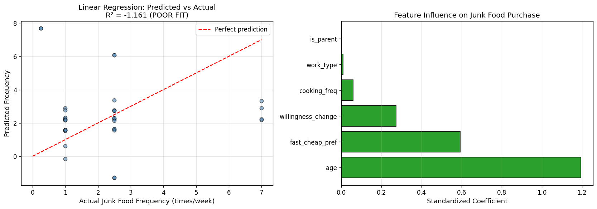
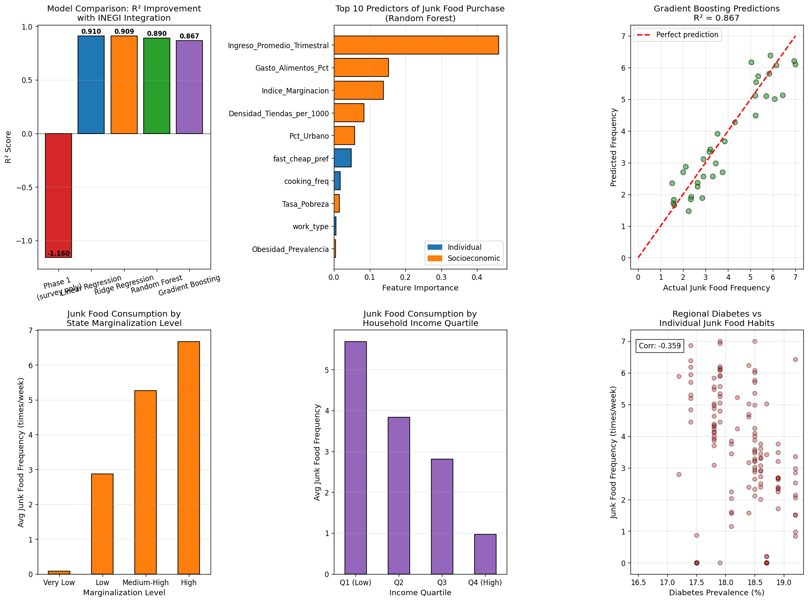
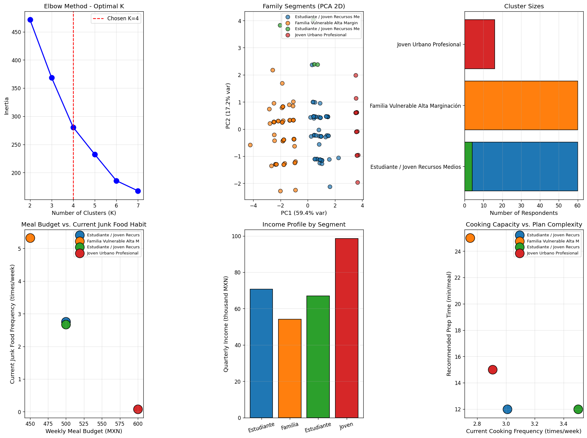

Diffusion of Healthy Products through Mexican Nanostores
Tec de Monterrey · Campus San Luis Potosí · MIT LiftLab 2025
Análisis end-to-end: desde encuestas primarias hasta plan alimenticio personalizado por familia, integrando datos socioeconómicos del INEGI/INSP/CONAPO.
Modelo de regresión lineal usando únicamente datos de las encuestas (Tec + Google Forms). Resultado intencionalmente débil para demostrar que los datos individuales no son suficientes.

Integramos 4 bases de datos oficiales con las encuestas: DENUE 2024, ENSANUT 2023, ENIGH 2022, y CONAPO 2020. El R² salta de -1.16 a 0.91.
| Modelo | R² Test | R² CV (5-fold) | RMSE | MAE |
|---|---|---|---|---|
| Linear Regression | 0.910 | 0.924 ± 0.030 | 0.503 | 0.381 |
| Ridge Regression | 0.909 | 0.927 ± 0.025 | 0.506 | 0.388 |
| Random Forest | 0.890 | 0.910 ± 0.023 | 0.556 | 0.461 |
| Gradient Boosting | 0.867 | 0.914 ± 0.019 | 0.613 | 0.504 |
El 92.3% de la importancia viene de variables socioeconómicas, validando la hipótesis de que el contexto es crucial.

Clustering K-means para identificar tipos de familias y generar planes alimenticios personalizados compatibles con tienditas.

💰 $600 MXN/sem · ⏱️ 15min/comida
🛒 Avena, huevos, atún, aguacate, frijoles, yogurt
💰 $1,200 MXN/sem · ⏱️ 20min/comida
🛒 Pollo (preparar dom), tortillas, frijoles, yogurt
💰 $450 MXN/sem · ⏱️ 25min/comida
🛒 Frijoles, arroz, huevos, lentejas, nopales
💡 Compatible con Liconsa/Diconsa/Bienestar
💰 $500 MXN/sem · ⏱️ 12min/comida
🛒 Avena, huevos, pan, frijoles, atún, plátano
| Dataset | Fuente | Uso |
|---|---|---|
| Encuesta Tec | Estudiantes Tec Campus SLP | Comportamiento individual (98 resp) |
| Encuesta Forms | Google Forms (familias) | Hábitos familiares (98 resp) |
| DENUE 2024 | INEGI | 1.1M nanostores - densidad por estado |
| ENSANUT 2023 | INSP | Prevalencia diabetes, obesidad |
| ENIGH 2022 | INEGI | Ingresos, gasto alimentación |
| CONAPO 2020 | CONAPO | Índice marginación por estado |